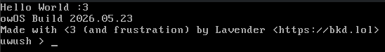
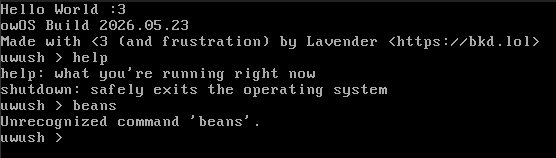

owOS: The operating system you never knew you needed



Download Current Version
Includes...

Component Info
uwush (UnderWhelmingly Underdeveloped SHell)
A shell made in C that... works. At the heart of owOS, you are going to be interacting with this shell all the time, so you better get used to it :p

Location in codebase: src/usr/bin/uwush.c